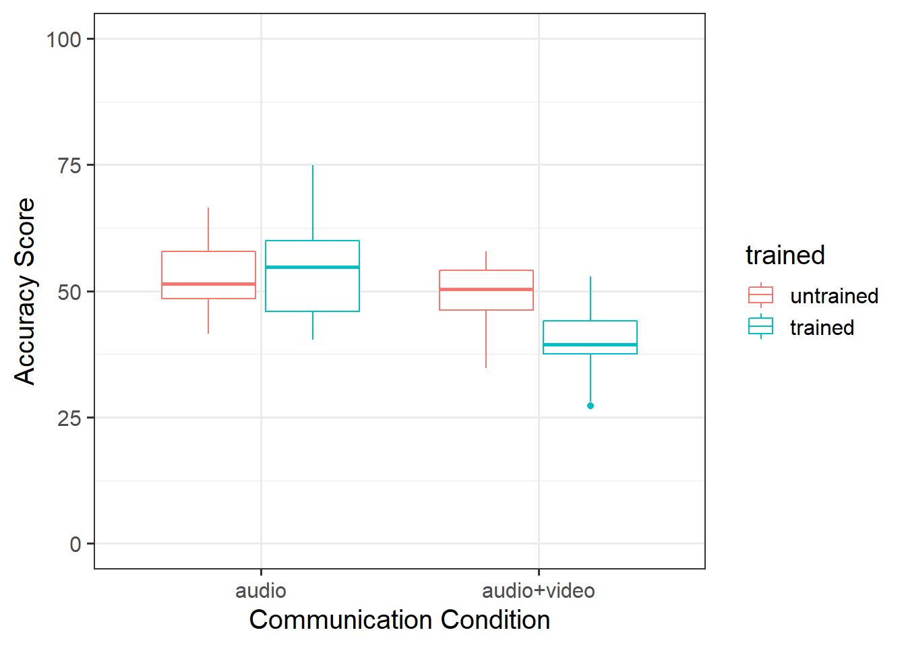
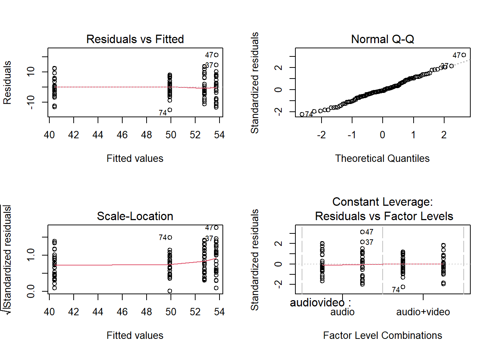
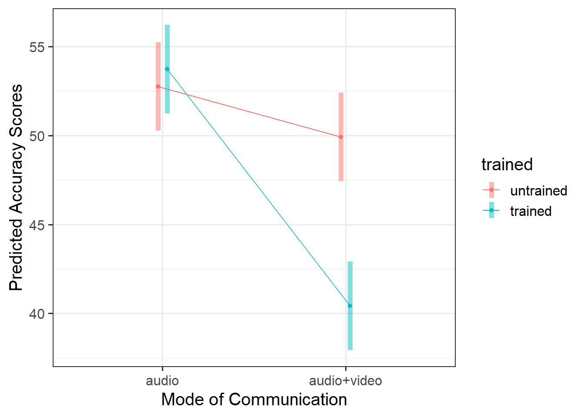
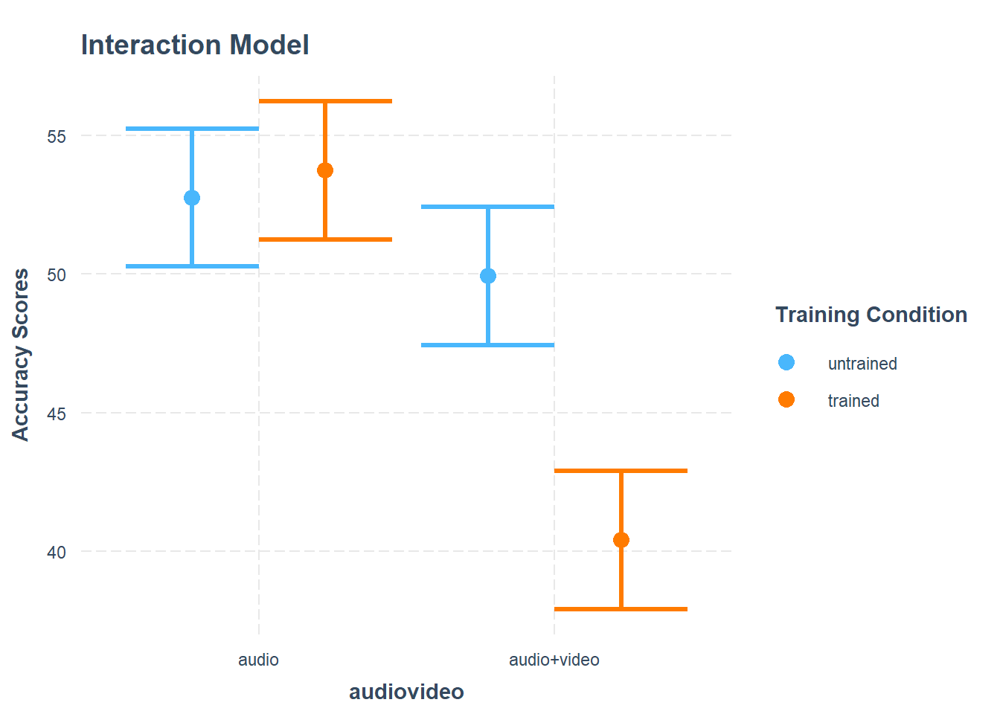
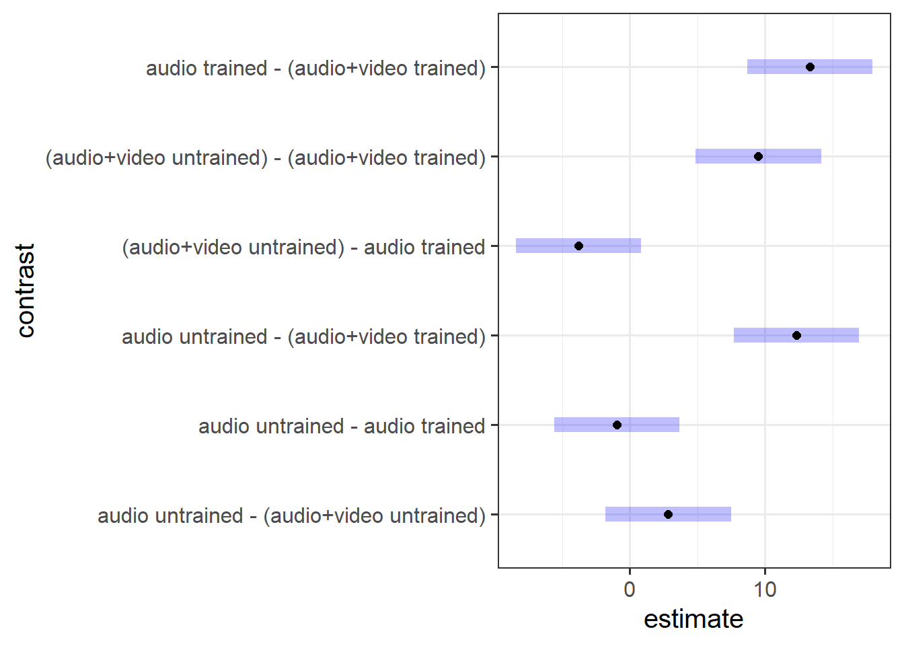

{kind=link}
| pid | age | trained | audiovideo | points |
|---|---|---|---|---|
| ppt_1 | 26 | y | audio+video | 36.23952 |
| ppt_2 | 22 | y | audio+video | 38.46473 |
| ppt_3 | 18 | y | audio+video | 34.19058 |
| ppt_4 | 22 | y | audio+video | 52.62804 |
| ppt_5 | 21 | y | audio+video | 38.89564 |
| ppt_6 | 27 | y | audio+video | 37.46595 |
Write Up Example & Block 3 Recap
Learning Objectives
At the end of this lab, you will:
- Understand how to write-up and provide interpretation of a 2x2 factorial ANOVA
What You Need
- Be up to date with lectures
- Have completed Labs 1-4
Required R Packages
Remember to load all packages within a code chunk at the start of your RMarkdown file using library(). If you do not have a package and need to install, do so within the console using install.packages(" "). For further guidance on installing/updating packages, see Section C here.
For this lab, you will need to load the following package(s):
- tidyverse
- psych
- kableExtra
- emmeans
Lab Data
You can download the data required for this lab here or read it in via this link https://uoepsy.github.io/data/lietraining.csv.
Section A: Write-Up
In this section of the lab you will be be presented with a research question, and tasked with writing up and presenting your analyses.
The aim in writing should be that a reader is able to more or less replicate your analyses without referring to your R code. This requires detailing all of the steps you took in conducting the analysis. The point of using RMarkdown is that you can pull your results directly from the code. If your analysis changes, so does your report!
Make sure that your final report doesn’t show any R functions or code. Remember you are interpreting and reporting your results in text, tables, or plots, targeting a generic reader who may use different software or may not know R at all. If you need a reminder on how to hide code, format tables, etc., make sure to review the rmd bootcamp.
Important - Write-Up Examples & Plagiarism
The example write-up sections included below are not perfect - they instead should give you a good example of what information you should include within each section, and how to structure this. For example, some information is missing (e.g., interpretation of descriptive statistics, what type of interaction is present), some information could be presented more clearly (e.g., variable names in tables, table/figure titles/captions, and rationales for choices), and writing could be more concise in places (e.g., discussion section is quite long).
Further, you must not copy any of the write-up included below for future reports - if you do, you will be committing plagiarism, and this type of academic misconduct is taken very seriously by the University. You can find out more here.
Study Overview
Research Question
Do Police training materials and the mode of communication influence the accuracy of veracity judgements?
Lie detectors: Data Codebook
Description
A total of 120 participants took part in a study in which they were presented with 100 recordings, and were tasked with guessing whether the speaker in each recording was lying or whether they were telling the truth.
Participants scored points every time they correctly identified a truth or a lie, and lost points whenever they mistook a lie for a truth (or vice versa). The maximum possible points to be scored was 100.
Half of the participants (\(n\) = 60) were shown recordings in audio and video, the other half were presented with only the audio track.
Prior to taking part in the experiment, participants were given material to read for 10 minutes. Half of the participants in each condition (30 in the audio-only condition, and 30 in the audiovideo condition) were given instructional material used by the Police Force to train detectives to pick up on dishonesty during interrogations via various verbal and non-verbal cues. The remaining 30 participants in each condition were given a series of cartoon strips to read.
The data in lietraining.csv contain seven attributes collected from a sample of \(n=120\) participants:
-
pid: Participant ID -
age: Age (in years) of participant -
trained: Whether participants were given instructional material used by the Police Force to train detectives to pick up on dishonesty during interrogations via various verbal and non-verbal cues (yes =y/ no =n) -
audiovideo: Audio-Video recording condition - eitheraudio+videofor those participants shown recordings in audio and video, orausio-onlyfor those participants presented with only the audio track -
points: Points scored for identifying a truth or a lie (range: 0-100)
Preview
The first six rows of the data are:
Setup
Setup
- Create a new RMarkdown file
- Load the required package(s)
- Read the lietraining dataset into R, assigning it to an object named
liedat
Solution
Analysis Code
Try to answer the research question above without referring to the provided analysis code below, and then check how your script matches up - is there anything you missed or done differently? If so, discuss the differences with a tutor - there are lots of ways to code to the same solution!
Provided Analysis Code
######Step 1 is always to read in the data, then to explore, check, describe, and visualise it.
#check coding of variables - are they coded as they should be?
str(liedat)spec_tbl_df [120 × 5] (S3: spec_tbl_df/tbl_df/tbl/data.frame)
$ pid : chr [1:120] "ppt_1" "ppt_2" "ppt_3" "ppt_4" ...
$ age : num [1:120] 26 22 18 22 21 27 27 26 25 22 ...
$ trained : chr [1:120] "y" "y" "y" "y" ...
$ audiovideo: chr [1:120] "audio+video" "audio+video" "audio+video" "audio+video" ...
$ points : num [1:120] 36.2 38.5 34.2 52.6 38.9 ...
- attr(*, "spec")=
.. cols(
.. pid = col_character(),
.. age = col_double(),
.. trained = col_character(),
.. audiovideo = col_character(),
.. points = col_double()
.. )
- attr(*, "problems")=<externalptr> head(liedat)# A tibble: 6 × 5
pid age trained audiovideo points
<chr> <dbl> <chr> <chr> <dbl>
1 ppt_1 26 y audio+video 36.2
2 ppt_2 22 y audio+video 38.5
3 ppt_3 18 y audio+video 34.2
4 ppt_4 22 y audio+video 52.6
5 ppt_5 21 y audio+video 38.9
6 ppt_6 27 y audio+video 37.5#make variables factors & label
liedat$audiovideo <- factor(liedat$audiovideo, labels=c("audio","audio+video"))
liedat$trained <- factor(liedat$trained, labels = c("untrained","trained"))
#create descriptives table
descript <- liedat %>%
group_by(audiovideo, trained) %>%
summarise(
meanpoints = round(mean(points), 2),
se = round(sd(points)/sqrt(n()), 2)
)`summarise()` has grouped output by 'audiovideo'. You can override using the
`.groups` argument.descript# A tibble: 4 × 4
# Groups: audiovideo [2]
audiovideo trained meanpoints se
<fct> <fct> <dbl> <dbl>
1 audio untrained 52.8 1.27
2 audio trained 53.7 1.55
3 audio+video untrained 49.9 1.01
4 audio+video trained 40.4 1.12#boxplot
p0 <- ggplot(data = liedat, aes(x = audiovideo, y = points, color = trained)) +
geom_boxplot() +
ylim(0,100) +
labs(x = "Communication Condition", y = "Accuracy Score")
p0
#plot showing the mean points for each condition
p1 <- ggplot(descript, aes(x = audiovideo, y = meanpoints, color = trained)) +
geom_point(size = 3) +
geom_linerange(aes(ymin = meanpoints - 2 * se, ymax = meanpoints + 2 * se)) +
geom_path(aes(x = as.numeric(audiovideo)))
p1
######Step 2 is to run your model(s) of interest to answer your research question, and make sure that the data meet the assumptions of your chosen test
#build model
lie_mdl <- lm(points ~ audiovideo * trained, data = liedat)
#check assumptions
par(mfrow=c(2,2))
plot(lie_mdl)
Call:
lm(formula = points ~ audiovideo * trained, data = liedat)
Residuals:
Min 1Q Median 3Q Max
-15.1947 -4.2134 -0.7559 4.5235 21.1755
Coefficients:
Estimate Std. Error t value Pr(>|t|)
(Intercept) 52.7591 1.2576 41.953 < 2e-16 ***
audiovideoaudio+video -2.8367 1.7785 -1.595 0.113
trainedtrained 0.9759 1.7785 0.549 0.584
audiovideoaudio+video:trainedtrained -10.4830 2.5152 -4.168 5.95e-05 ***
---
Signif. codes: 0 '***' 0.001 '**' 0.01 '*' 0.05 '.' 0.1 ' ' 1
Residual standard error: 6.888 on 116 degrees of freedom
Multiple R-squared: 0.3768, Adjusted R-squared: 0.3607
F-statistic: 23.38 on 3 and 116 DF, p-value: 6.591e-12anova(lie_mdl)Analysis of Variance Table
Response: points
Df Sum Sq Mean Sq F value Pr(>F)
audiovideo 1 1957.7 1957.71 41.263 3.046e-09 ***
trained 1 545.8 545.85 11.505 0.00095 ***
audiovideo:trained 1 824.2 824.20 17.372 5.949e-05 ***
Residuals 116 5503.6 47.45
---
Signif. codes: 0 '***' 0.001 '**' 0.01 '*' 0.05 '.' 0.1 ' ' 1#int model plot
plt_mdl <- emmip(lie_mdl, trained~audiovideo,
CIs = TRUE,
xlab = "Mode of Communication",
ylab = "Predicted Accuracy Scores",
title = "Interaction Model")
plt_mdl
#####Step 3 somewhat depends on the outcomes of step 2. Here, you may need to consider conducting further analyses before writing up / describing your results in relation to the research question.
#Perform a pairwise comparison of the mean accuracy (as measured by points accrued) across the 2×2 factorial design, making sure to adjust for multiple comparisons.
emms_lie <- emmeans(lie_mdl, ~ audiovideo * trained)
lie_con <- contrast(emms_lie, method = "pairwise", adjust="tukey")
lie_con contrast estimate SE df t.ratio
audio untrained - (audio+video untrained) 2.837 1.78 116 1.595
audio untrained - audio trained -0.976 1.78 116 -0.549
audio untrained - (audio+video trained) 12.344 1.78 116 6.941
(audio+video untrained) - audio trained -3.813 1.78 116 -2.144
(audio+video untrained) - (audio+video trained) 9.507 1.78 116 5.346
audio trained - (audio+video trained) 13.320 1.78 116 7.489
p.value
0.3855
0.9467
<.0001
0.1456
<.0001
<.0001
P value adjustment: tukey method for comparing a family of 4 estimates # confidence intervals
confint(lie_con) contrast estimate SE df lower.CL
audio untrained - (audio+video untrained) 2.837 1.78 116 -1.80
audio untrained - audio trained -0.976 1.78 116 -5.61
audio untrained - (audio+video trained) 12.344 1.78 116 7.71
(audio+video untrained) - audio trained -3.813 1.78 116 -8.45
(audio+video untrained) - (audio+video trained) 9.507 1.78 116 4.87
audio trained - (audio+video trained) 13.320 1.78 116 8.68
upper.CL
7.473
3.660
16.980
0.823
14.143
17.956
Confidence level used: 0.95
Conf-level adjustment: tukey method for comparing a family of 4 estimates #plot
plot(lie_con)
The 3-Act Structure: Analysis Strategy, Results, & Discussion
Recall that we need to present our report in three clear sections - think of your sections like the 3 key parts of a play or story - we need to (1) provide some background and scene setting for the reader, (2) present our results in the context of the research question, and (3) present a resolution to our story - relate our findings back to the question we were asked and provide our answer.
If you need a reminder of what to include within each section, refer to Semester 1 Lab 11, and read through the ‘what to include’ sections for Analysis Strategy, Results, and Discussion.
Act I: Analysis Strategy
Question 1
Attempt to draft a discussion section based on the above research question and analysis provided.
Example Write-Up of Analysis Strategy Section
The lietraining dataset contained information on 120 participants who took part in a study concerning lie detection. Participants were each presented with 100 recordings (half were shown recordings in audio and video, and the other half audio only), and were tasked with judging whether the speaker in each recording was lying or whether they were telling the truth. Participants scored 1 point each time they correctly identified a truth or a lie, and lost 1 point whenever they mistook a lie for a truth (or vice versa). The maximum score was 100, where higher scores reflected higher levels of accuracy. Prior to taking part in the experiment participants were given materials to read. Half of the participants in each condition were given instructional material used by the Police Force (used to train detectives to pick up on dishonesty during interrogations via various verbal and non-verbal cues) and the remaining 30 participants in each condition were given a series of cartoon strips to read.
All participant data was complete, and accuracy scores (points) within range i.e., 0-100. Categorical variables were coded as factors, where audio was designated as the reference level for mode of communication, and untrained as the reference level for training materials.
To investigate whether police training materials (trained vs untrained) and the mode of communication (audio vs audiovideo) interacted to influence the accuracy of veracity judgements, a two-way ANOVA model was used. Effects were considered statistically significant at \(\alpha = 0.05\). Using dummy coding, the following model specification was used:
\[ \begin{aligned} \text{Accuracy Scores} &= \beta_0 \\ &+ \beta_1 A_\text{AudioVideo} + \beta_2 T_\text{Trained} \\ &+ \beta_3 (A_\text{AudioVideo} * T_\text{Trained}) \\ &+ \epsilon \end{aligned} \]
To address the research question of whether the interaction between training materials and mode of communication was statistically significant, this formally corresponded to testing whether the interaction coefficient was equal to zero:
\[ H_0: \beta_3 = 0 \]
\[ H_1: \beta_3 \neq 0 \]
The following assumptions were assessed visually using diagnostic plots: independence (with the previous plot and a plot of residuals vs index; no dependence should be indicated), equal variances (via a scale-location plot; residuals should be evenly spread across the range of fitted values, where the spread should be constant across the range of fitted values), and normality (via a qqplot of the residuals; points should follow along the diagonal line). We also checked if there was any evidence of multicollinearity by checking VIF values, where values > 5 were considered to indicate moderate multicollinearity, and values > 10 severe. Outliers were assessed via Cooks Distance, where values >2 indicated influential points.
Act II: Results
Question 2
Attempt to draft a results section based on your detailed analysis strategy and the analysis provided.
Example Write-Up of Results Section
Descriptive statistics are displayed in Table 1.
| audiovideo | trained | mean_points | se |
|---|---|---|---|
| audio | untrained | 52.76 | 1.27 |
| audio | trained | 53.74 | 1.55 |
| audio+video | untrained | 49.92 | 1.01 |
| audio+video | trained | 40.42 | 1.12 |
In the audio condition, there did not appear to be a difference between trained and non-trained scores. However, untrained scored higher than trained in the audio+video condition. This suggested that there may be an interaction (see Figure 1).
Accuracy of veracity judgements (measured by points scored in lie-detecting game) were analysed with a 2 (audio vs audiovideo) \(\times\) 2 (untrained vs trained) between-subjects ANOVA.
The model met assumptions of linearity and independence (see top left panel of Figure 2; residuals were randomly scattered with a mean of zero and there was no clear dependence), homoscedasticity (see bottom left panel of Figure 2; there was a constant spread of residuals), and normality (see top right panel of Figure 2; the QQplot showed very little deviation from the diagonal line).

There was a significant interaction between presentation mode and whether or not participants had received training for detecting lies \(F(1, 116) = 17.37, p <. 001\) (see Table 2).
| Df | Sum Sq | Mean Sq | F value | Pr(>F) | |
|---|---|---|---|---|---|
| audiovideo | 1 | 1957.71 | 1957.71 | 41.26 | 0.00e+00 |
| trained | 1 | 545.85 | 545.85 | 11.50 | 9.50e-04 |
| audiovideo:trained | 1 | 824.20 | 824.20 | 17.37 | 5.95e-05 |
| Residuals | 116 | 5503.63 | 47.45 | NA | NA |
As displayed in Figure 3, results suggested that the difference in points did not differ significantly in the audio condition regardless of training, but that there were significant differences in the audio-video condition where untrained participants had higher accuracy scores than trained.

To explore the interaction further, pairwise comparisons were conducted. Tukey’s Honestly Significant Difference comparisons (see Figure 4) indicated that, contrary to what one might expect, participants who were presented with audiovisual recordings scored on average 9.5 points lower when they had read the police training materials compared to when they had received no training (95% CI [4.87 — 14.14]). The presentation mode (audio vs audio-video) was not found to result in a significantly different average score for those who were untrained (95% CI [-1.80 — 7.47]), and nor did training appear to have any effect on detecting lies in the audio-only condition (95% CI [-5.61 — 3.66]).

Act III: Discussion
Question 3
Attempt to draft a discussion section based on your results and the analysis provided.
Example Write-Up of Discussion Section
The findings indicated that, in general, people were inaccurate when trying to distinguish between a lie and the truth, as the overall mean score was 49.21 out of 100 (SD = 8.61), where a series of completely random guesses expected to score 50/100. Our results led us to reject the null hypothesis that the interaction coefficient was equal to zero, as the results indicated that the association between police training materials and mode of communication did interact to influence the accuracy of veracity judgements. The direction of this association was surprising - trained participants performed more poorly (compared to untrained) in the audio-visual condition. This may indicate that the training materials focus too heavily on visual cues (since there was no difference in police training conditions in the audio-only communication condition), which perhaps are not actually associated with dishonesty in the appropriate way.
Section B: Weeks 1-5 Recap
In the second part of the lab, there is no new content - the purpose of the recap section is for you to revisit and revise the concepts you have learned over the last 4/5 weeks.
Before you expand each of the boxes below, think about how comfortable you feel with each concept.
F-Ratio
As in simple linear regression, the \(F\)-ratio is used to test the null hypothesis that all regression slopes are zero.
It is called the \(F\)-ratio because it is the ratio of the how much of the variation is explained by the model (per paramater) versus how much of the variation is unexplained (per remaining degrees of freedom).
\[ F_{df_{model},df_{residual}} = \frac{MS_{Model}}{MS_{Residual}} = \frac{SS_{Model}/df_{Model}}{SS_{Residual}/df_{Residual}} \\ \quad \\ \]
\[ \begin{align} & \text{Where:} \\ & df_{model} = k \\ & df_{error} = n-k-1 \\ & n = \text{sample size} \\ & k = \text{number of explanatory variables} \\ \end{align} \]
In R, at the bottom of the output of summary(<modelname>),:

The \(F\)-ratio you see at the bottom of summary(model) is actually a comparison between two models: your model (with some explanatory variables in predicting \(y\)) and the null model.
In regression, the null model can be thought of as the model in which all explanatory variables have zero regression coefficients. It is also referred to as the intercept-only model, because if all predictor variable coefficients are zero, then the only we are only estimating \(y\) via an intercept (which will be the mean - \(\bar y\)).
Alongside viewing the \(F\)-ratio, you can see the results from testing the null hypothesis that all of the coefficients are \(0\) (the alternative hypothesis is that at least one coefficient is \(\neq 0\). Under the null hypothesis that all coefficients = 0, the ratio of explained:unexplained variance should be approximately 1)
:::
Nested vs Non-Nested Models
Nested Models
Consider that you have two regression models where Model 1 contains a subset of the predictors contained in the other Model 2 and is fitted to the same data. More simply, Model 2 contains all of the predictors included in Model 1, plus additional predictor(s). This means that Model 1 is nested within Model 2, or that Model 1 is a submodel of Model 2. These two terms, at least in this setting, are interchangeable - it might be easier to think of Model 1 as your null and Model 2 as your alternative.
Non-Nested Models
Consider that you have two regression models where Model 1 contains different variables to those contained in Model 2, where both models are fitted to the same data. More simply, Model 1 and Model 2 contain unique variables that are not shared. This means that Model 1 and Model 2 are not nested.
Incremental F-test
If (and only if) two models are nested, can we compare them using an incremental F-test.
This is a formal test of whether the additional predictors provide a better fitting model.
Formally this is the test of:
- \(H_0:\) coefficients for the added/omitted variables are all zero.
- \(H_1:\) at least one of the added/omitted variables has a coefficient that is not zero.
The \(F\)-ratio for comparing the residual sums of squares between two models can be calculated as:
\[ F_{(df_R-df_F),df_F} = \frac{(SSR_R-SSR_F)/(df_R-df_F)}{SSR_F / df_F} \\ \quad \\ \]
\[ \begin{align} & \text{Where:} \\ \\ & SSR_R = \text{residual sums of squares for the restricted model} \\ & SSR_F = \text{residual sums of squares for the full model} \\ & df_R = \text{residual degrees of freedom from the restricted model} \\ & df_F = \text{residual degrees of freedom from the full model} \\ \end{align} \]
Comparing regression models with anova()
Remember that you want your models to be parsimonious, or in other words, only as complex as they need to be in order to describe the data well. This means that you need to be able to justify your model choice, and one way to do so is by comparing models via anova(). If your model with multiple IVs does not provide a significantly better fit to your data than a more simplistic model with less IVs, then the more simplistic model should be preferred.
In R, we can conduct an incremental \(F\)-test by constructing two linear regression models, and passing them to the anova() function:
anova(model1, model2)If the \(p\)-value is sufficiently low (i.e., below your predetermined significance level - usually .05), then you would conclude that model 2 is significantly better fitting than model 1. If \(p\) is not < .05, then you should favor the more simplistic model.
AIC & BIC
AIC (Akaike Information Criterion) and BIC (Bayesian Information Criterion) combine information about the sample size, the number of model parameters, and the residual sums of squares (\(SS_{residual}\)). Models do not need to be nested to be compared via AIC and BIC, but they need to have been fit to the same dataset.
For both of these fit indices, lower values are better, and both include a penalty for the number of predictors in the model (although BIC’s penalty is harsher):
\[ AIC = n\,\text{ln}\left( \frac{SS_{residual}}{n} \right) + 2k \\ \quad \\ BIC = n\,\text{ln}\left( \frac{SS_{residual}}{n} \right) + k\,\text{ln}(n) \\ \quad \\ \]
\[ \begin{align} & \text{Where:} \\ & SS_{residual} = \text{sum of squares residuals} \\ & n = \text{sample size} \\ & k = \text{number of explanatory variables} \\ & \text{ln} = \text{natural log function} \end{align} \]
Side Contraints
Possible side-constraints on the parameters are:
| Name | Constraint | Meaning of \(\beta_0\) | R |
|---|---|---|---|
| Sum to zero (Effects Coding) | \(\beta_1 + \beta_2 + \beta_3 = 0\) | \(\beta_0 = \mu\) | contr.sum |
| Reference group (Dummy Coding) | \(\beta_1 = 0\) | \(\beta_0 = \mu_1\) | contr.treatment |
IMPORTANT
By default
Ruses the reference group constraint. If your factor has \(g\) levels, your regression model will have \(g-1\) dummy variables (Rcreates them for you)We can switch back to the default reference group constraint by applying either of these:
Contrasts: Rules for Assigning Weights
- Rule 1: Weights are -1 \(\geq\) x \(\leq\) 1
- Rule 2: The group(s) in one chunk are given negative weights, the group(s) in the other get positive weights
- Rule 3: The sum of the weights of the comparison must be 0
- Rule 4: If a group is not involved in the comparison, weight is 0
- Rule 5: For a given comparison, weights assigned to group(s) are equal to 1 divided by the number of groups in that chunk.
- Rule 6: Restrict yourself to running \(k\) - 1 comparisons (where \(k\) = number of groups)
- Rule 7: Each contrast can only compare 2 chunks of variance
- Rule 8: Once a group singled out, it can not enter other contrasts
Multiple Comparisons: Why does the Number of Tests Matter?
If we are conducting all possible pairwise comparisons, we can calculate how many tests are being conducted via the following rule:
\[ _nC_r = \frac{n!}{r!(n-r)!} \\ \]
\[ \begin{align} \\ & \text{Where:} \\ & n = \text{total number in the set} \\ & r = \text{number chosen} \\ & _nC_r = \text{number of combinations of r from n} \\ \end{align} \]
So, why does the number of tests matter? First, think back to “Type 1 errors” from DAPR1 - when we conduct an hypothesis test, and we set \(\alpha = .05\), we will reject the null hypothesis \(H_0\) when we find a \(p < .05\). Now remember what a \(p\)-value represents - it is the chance of observing a statistic at least as extreme as the one we do have, assuming the null hypothesis to be true. This means that if \(H_0\) is true, then we will still observe a \(p < .05\) 5% of the time. So our chance of making this error = the threshold (\(\alpha\)) at which below a p-value results in us rejecting \(H_0\).
But this error-rate applies to each statistical hypothesis we test. So if we conduct an experiment in which we plan on conducting lots of tests of different comparisons, the chance of an error being made increases substantially. Across the family of tests performed that chance will be much higher than 5%.1
Each test conducted at \(\alpha = .05\) has a .05 (or 5%) probability of Type I error (wrongly rejecting the null hypothesis). If we do 9 tests, that experimentwise error rate is \(\alpha_{ew} \leq 9 \times .05\), where 9 is the number of comparisons made as part of the experiment.
Thus, if nine independent comparisons were made at the \(\alpha = 0.05\) level, the experimentwise Type I error rate \(\alpha_{ew}\) would be at most \(9 \times 0.05 = 0.45\). That is, we could wrongly reject the null hypothesis on average 45 times out of 100. To make this more confusing, many of the tests in a family are not independent (see the lecture slides for the calculation of error rate for dependent tests).
Multiple Comparisons: When to use Which Correction
Bonferroni
- Use Bonferroni’s method when you are interested in a small number of planned contrasts (or pairwise comparisons).
- Bonferroni’s method is to divide alpha by the number of tests/confidence intervals.
- Assumes that all comparisons are independent of one another.
- It sacrifices slightly more power than Tukey’s method (discussed below), but it can be applied to any set of contrasts or linear combinations (i.e., it is useful in more situations than Tukey).
- It is usually better than Tukey if we want to do a small number of planned comparisons.
Šídák
- (A bit) more powerful than the Bonferroni method.
- Assumes that all comparisons are independent of one another.
- Less common than Bonferroni method, largely because it is more difficult to calculate (not a problem now we have computers).
Tukey
- It specifies an exact family significance level for comparing all pairs of treatment means.
- Use Tukey’s method when you are interested in all (or most) pairwise comparisons of means.
Scheffe
- It is the most conservative (least powerful) of all tests.
- It controls the family alpha level for testing all possible contrasts.
- It should be used if you have not planned contrasts in advance.
- For testing pairs of treatment means it is too conservative (you should use Bonferroni or Šídák).
In R, you can easily change which correction you are using via the adjust = argument.
Bootstrap: Terminology
- A parameter is a numerical summary for the population, e.g. the population slope \(\beta_1\)
- A statistic is a numerical summary calculated from the sample data, e.g. the estimated slope in the sample \(\widehat \beta_1\). We use the sample statistic as a best guess, or estimate, for the unknown population parameter.
- A bootstrap sample is chosen with replacement from an existing sample, using the same sample size.
- A bootstrap statistic is a statistic computed for each bootstrap sample.
- A bootstrap distribution collects bootstrap statistics for many bootstrap samples.
Note
See Week 5 lectures for further details, examples, and to revise these concepts further.
Bootstrap
The bootstrap is a general approach to assessing whether the sample results are statistically significant or not, and allows us to draw inferences to the population from a regression model. This method is assumption-free and does not rely on conditions such as normality of the residuals.
It is based on sampling repeatedly with replacement (to avoid always getting the original sample exactly) from the data at hand, and then computing the regression coefficients from each re-sample. We will equivalently use the word “bootstrap sample” or “resample” (for sample with replacement).
The basic principle is:
The population is to the original sample
as
the original sample is to the bootstrap samples.
Because we only have one sample of size \(n\), and we do not have access to the data for the entire population, we consider our original sample as our best approximation to the population.
To be more precise, we assume that the population is made up of many, many copies of our original sample. Then, we take multiple samples each of size \(n\) from this assumed population. This is equivalent to sampling with replacement from the original sample.

Note
See Week 5 lectures for further details, examples, and to revise these concepts further.
Bootstrap: In R
Follow these steps:
- 1: Load the
carlibrary - 2: Use the
Boot()function (do not forget the uppercase B!) which takes as arguments:- the fitted model
-
f, saying which bootstrap statistics to compute on each bootstrap sample. By defaultf = coef, returning the regression coefficients. -
R, saying how many bootstrap samples to compute. By defaultR = 999but this could be any number. To experiment we recommend 1000, when you want to produce results for journals, it is typical to go with 10,000 or more. -
ncores, saying if to perform the calculations in parallel (and more efficiently). However, this will depend on your PC, and you need to find how many cores you have by runningparallel::detectCores()on your PC. By default the function usesncores = 1.
- 3: Run the code. However, please remember that the
Boot()function does not want a model which was fitted using data withNAs. To remove, for example, you could usena.omit. - 4: Look at the
summary()of the bootstrap results. When doing so the output will show, for each regression coefficient, the value in the original sample in the columnoriginal, and in thebootSEcolumn, the estimate of the variability of the coefficient from bootstrap sample to bootstrap sample. ThebootSEprovides us the bootstrap standard error, or bootstrap SE in short. We can use this to answer the key question of how accurate our estimate is. - 5: Compute confidence intervals. Use your preferred confidence level (usually, and by default, 95%)
- 6: Provide interpretation in the context of your research question and report results in APA format.
In R, for example:
Note
See Week 5 lectures for further details, examples, and to revise these concepts further.
Footnotes
what defines a ‘family’ of tests is debatable.↩︎